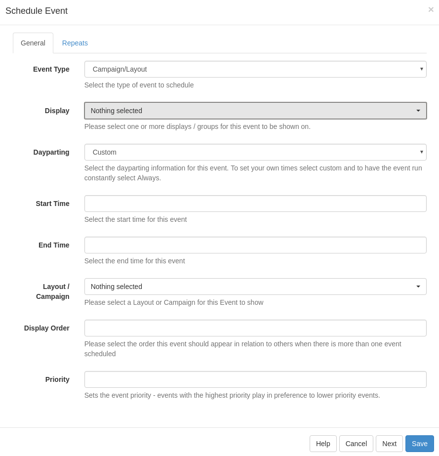

Events
Events are Layouts or Campaigns assigned to Displays at specific dates and times. The event form can be launched from the Calendar Control buttons and by clicking on any existing event in the calendar.
When launched the form looks like this:

Event Type
Scheduling supports 3 types of event:
- Campaign/Layout Events
- Command Events
- Overlay Layouts
These are chosen using the "Event Type" drop down select list on the Add/Edit event form.
Campaign/Layout events are the main type of event and cause the selected Campaign/Layout to be shown on the Player. Multiple items can be scheduled at the same time and they will be shown in a loop according to the Display Order on the event.
Command events are executed once per schedule against each display that applies. They can be able predefined command with a command string specified for the Display Settings Profile active on the Display.
Overlay Layouts are Layouts that can be overlaid over the existing schedule so that they sit on top of the Campaign / Layout schedule playing. This is particularly useful for having a company logo or Ticker that exists across all Layouts being shown.
Dayparting
Events are scheduled into "dayparts" which are blocks of time that split up the day. By default the CMS contains a daypart for adhoc scheduling (called the custom daypart) and for scheduling an event "always." More information can be found in Dayparting.
Events scheduled with Dayparting only apply to a single day, meaning recurring events should be used to create an event that covers more than 1 day. This is because the Dayparting information is used to set the end time of the event.
To give your own From/To Dates then the "Custom" daypart should be selected.
Dayparting is not available for Command Events as these must be for a specific time.
Recurring Events
The scheduler features the ability to create recurring events. To set recurrence for events, select the required "Repeats" value from the list and the appropriate additional fields will be revealed.
A scheduled event can be repeated at defined interval (hourly, daily, weekly, monthly or yearly) until the specified date / time.
Priority Events
Priority schedules allow an event to be added that overrides all other non-priority events on the schedule. This functionality is useful for displaying temporary important notices, or overriding the schedule for a specific event without having to cancel the layouts that would normally be running at that time.
When adding a new schedule, or when editing an existing schedule, tick the "Priority" box to make the schedule override the others.
Multiple priority events may be scheduled concurrently. They will be shown in a cycle in the same way as non-priority layouts would be.
Deleting an Event
To delete an event, first open the Schedule Form and then select the "Delete" button from the button bar on the form. The Delete Event form will open allowing confirmation of the Delete.
Run at CMS time
The "Run at CMS time" checkbox is available on Add/Edit forms. It determines whether the event runs using the time on the Display, or whether the event is synchronised to the CMS time. The default is for this option to be deselected.
Consider the following example:
- CMS Time = GMT
- Display 1 = GMT
- Display 2 = GMT -4
An event scheduled for 11:00 with Run at CMS time deselected (the default) will run on Display 1 at 11:00 and Display 2 at 11:00. These two Displays will not show the same content at the same time, because Display 2 is 4 hours behind.
With "Run at CMS time" selected Display 1 will run at 11:00 as before, but Display 2 will run at 07:00.
Please note that Schedule Now functionality will always create events with this option selected.